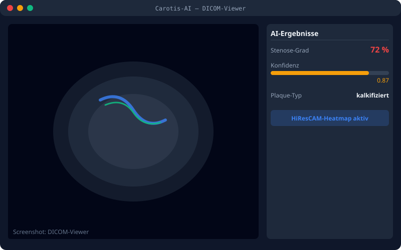
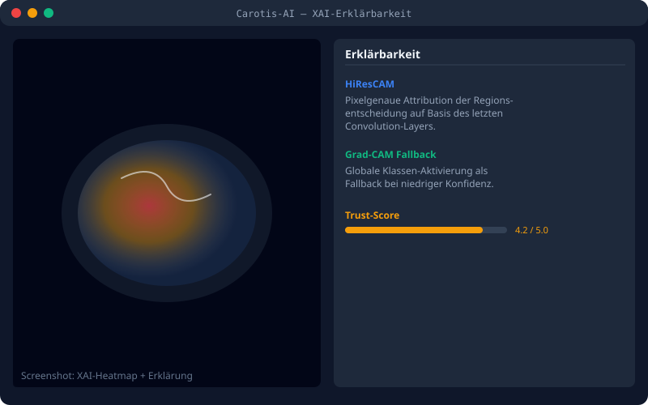
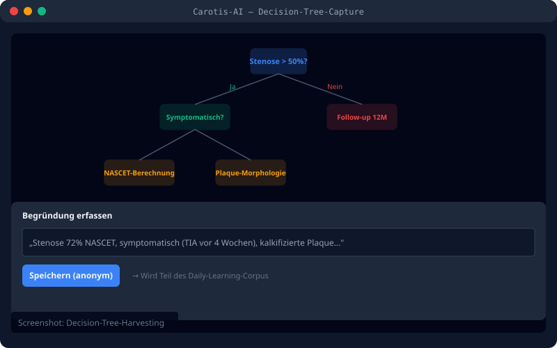

Cloud-Abhängigkeit
Marktlösungen sind cloud-basiert — das erzeugt DSGVO-Risiko in deutschen Kliniken und erfordert komplexe Auftragsverarbeitungsverträge.
Promotionsprojekt am Klinikum Dortmund. Local-First Edge AI. DSGVO by Design. Decision-Tree-Harvesting.
Die bestehenden Lösungen für KI-gestützte Bilddiagnostik stoßen in deutschen Kliniken an systemische Grenzen.
Marktlösungen sind cloud-basiert — das erzeugt DSGVO-Risiko in deutschen Kliniken und erfordert komplexe Auftragsverarbeitungsverträge.
Bestehende Tools sind nicht Carotis-spezifisch. Thorax-CT-Modelle liefern keine Stenose-Quantifizierung nach NASCET-Standard.
Modelle ohne Erklärbarkeit kollidieren mit EU AI Act Art. 13 (Transparency). Ärzte können Entscheidungen nicht nachvollziehen.
Carotis-AI ist als lokales Edge-System konzipiert — nicht als Cloud-Dienst. Jede Schicht ist nachvollziehbar und auditierbar.
U-Net + Swin Transformer + Deep Supervision für Segmentierung und Stenose-Quantifizierung aus CTA-Bildern.
Pixelgenaue Attribution der Regionsentscheidung auf Basis des letzten Convolution-Layers. Grad-CAM als Fallback bei niedriger Konfidenz.
Anonymisierte Begründungs-Strukturen der Radiologen werden erfasst und als strukturierter Korpus gespeichert. Das Modell lernt die ärztliche Entscheidung — nicht nur das Bild.
Tägliche inkrementelle Updates des Modells auf Basis des neu erfassten Decision-Tree-Korpus. Auto-Rollback bei Performance-Verlust.



Datenschutz ist in der Architektur verankert — nicht im Vertragsanhang.
Patientendaten verlassen das Klinikum nie. Inferenz läuft auf Edge-Hardware vor Ort. Kein Cloud-Export, keine externe API.
Datenschutz-Folgenabschätzung als Skelett vorliegend. Vollständige DPIA wird im Ethik-Verfahren (P1) finalisiert.
33 PII-Tags werden vor jeder Verarbeitung entfernt oder gehasht. Audit-Trail speichert nur SHA-256-Hashes und numerische Werte.
Risikomanagement-Datei mit 11 identifizierten Hazards inkl. H-011 (Freitext-PII-Leakage). Kontrollmaßnahmen dokumentiert.
Software-Lebenszyklus-Prozess für Medizinprodukte wird mit wissenschaftlicher Beratung durch Prof. Margaritoff (HAW Hamburg) aufgebaut.
Ein interdisziplinäres Team aus Medizin, Medizintechnik und Computer Vision.
Projektleiterin · Klinische Radiologie
Ärztin in Weiterbildung Radiologie, Klinikum Dortmund
Engineering-Lead · Medizintechnik
Medizintechniker, HAW Hamburg
AI-Architect · Computer Vision
JoVision, 4 Patente Computer Vision
Wissenschaftliche Beratung: Prof. Dr. Petra Margaritoff (DIN EN 62304, Medical Embedded Systems), Prof. Dr. Boris Tolg (SIMLab, VR in Medicine), Prof. Dr. Udo van Stevendaal (Vorsitz Medizintechnik-Hamburg).
Antworten auf die wichtigsten Fragen zu Technologie, Datenschutz und wissenschaftlicher Einordnung.
Lou (Medizintechniker, HAW Hamburg) leitet das Training, beraten von Dr. Islam Shdaifat (4 Patente Computer Vision, JoVision) und unterstützt von Prof. Margaritoff (HAW, DIN EN 62304). Das Trainings-Setup läuft auf einer Workstation außerhalb des Klinikums. Daten werden vorher anonymisiert (DICOM PS 3.15) und gehasht. Kein PII verlässt jemals das Klinikum.
24 Monate bis zur Disputation. Phasen sind detailliert geplant: M1–M2 Ethik + Datenvertrag, M3–M5 Datenakquise, M6–M9 Modell-Training, M10–M15 Klinikum-Integration, M16–M21 Validierung, M22–M24 Manuskript. Der vollständige Plan liegt als Anlage vor.
Das Bilderkennungs-Modell selbst (MFSD-UNet) ist State-of-the-Art und nicht der eigentliche Beitrag. Der Beitrag ist die Decision-Tree-Harvesting-Methodik: Wir trainieren nicht nur auf Bildern, sondern auch auf den anonymisierten Begründungs-Strukturen der Befunder. Das ist neu in der Medical-AI-Literatur und adressiert die von Le et al. (2024) identifizierte Lücke beim Reasoning-Capture.
Innerhalb des Klinikums: nur autorisierte Radiologen via PVS. Auf dem Edge-Server: nur das Modell selbst und ein Audit-Trail. Beim Trainings-Standort: nur anonymisierte Daten ohne Re-Identifizierungs-Möglichkeit. Auditierbar via DICOM-Anonymisierungs-Report.
Wir behandeln Carotis-AI proaktiv als High-Risk AI System. Konkret: Art. 10 (Data Governance — Anonymisierung + Bias-Audit), Art. 13 (Transparency — Grad-CAM), Art. 14 (Human Oversight — Arzt ist Entscheider, nicht Beobachter), Art. 15 (Accuracy/Robustness — Auto-Rollback bei Performance-Verlust). Dokumentation läuft ab P1.
Das Modell schlägt vor — es entscheidet nicht. Der behandelnde Arzt bestätigt jeden Befund. Audit-Trail jeder Inferenz und jeder Bestätigung ist gespeichert. Im Schadensfall ist die ärztliche Entscheidung dokumentiert und nachvollziehbar. Haftungsrechtlich identisch zur Standard-Befundung mit konventionellem CAD. Die Risikoanalyse nach ISO 14971 behandelt diesen Fall explizit.
Für wissenschaftliche Anfragen, Kooperationsinteressen oder Medienkontakt.